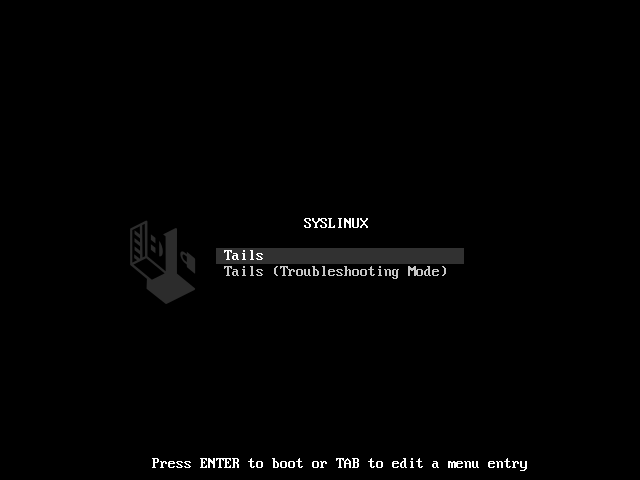
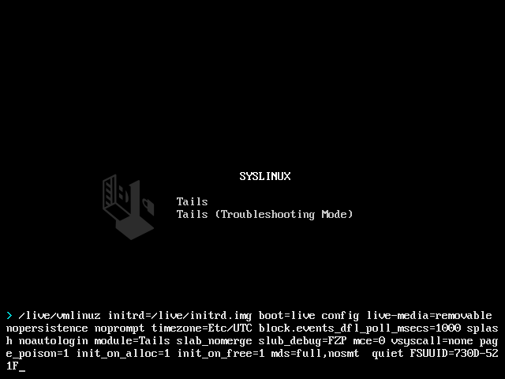
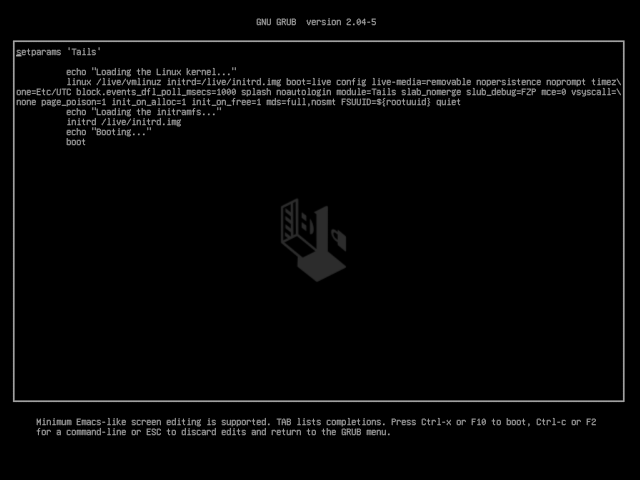

The Boot Loader is the first screen that appears when Tails starts.
You can use the Boot Loader to modify the boot options. Boot options are special parameters used to troubleshoot or work around hardware support problems. For example, our list of known issues with graphics cards document boot options for different graphics cards.
The Troubleshooting Mode of the Boot Loader disables some features of the Linux kernel and might work better on some computers. You can try this option if you think you are experiencing hardware compatibility errors while starting Tails.
Depending on the computer, the Boot Loader might be either GRUB or SYSLINUX.
Using SYSLINUX
This is what SYSLINUX looks like:

If your Boot Loader looks different, refer to our instructions below on modifying the boot options using GRUB.
To modify the boot options in SYSLINUX:
Press Tab when SYSLINUX appears.
A command line with a list of boot options appears at the bottom of the screen.

Modify the boot options as needed.
To add a boot option, press Space and type the boot option that you want to add.
If you want to add more than one boot option, type them one after the other and separate them with a Space.
Press Enter to start Tails.
Using GRUB
This is what GRUB looks like:

If your Boot Loader looks different, refer to our instructions on modifying the boot options using SYSLINUX above.
To modify the boot options in GRUB:
Press e when GRUB appears.
A new screen appears with more options.

Modify the boot options as needed.
To add a boot option, navigate with the arrows of the keyboard to the end of the line that starts with linux. Type the boot option that you want to add. The line is most likely wrapped and displayed on several lines but it is a single configuration line.
If you want to add more than one boot option, type them one after the other and separate them with a Space.
Press Ctrl+X, F10, or Fn+F10 to start Tails.